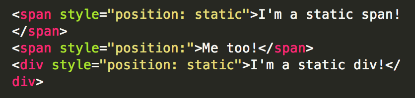
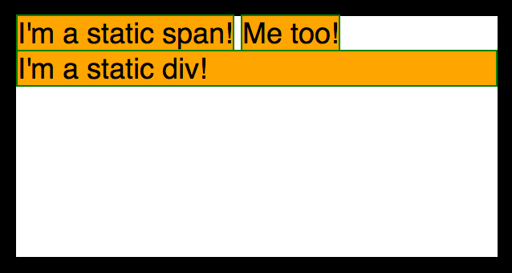
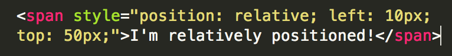
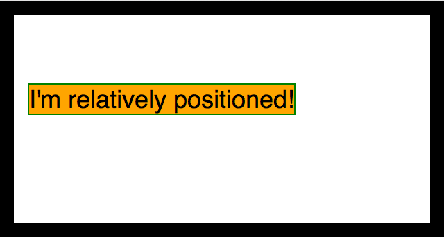
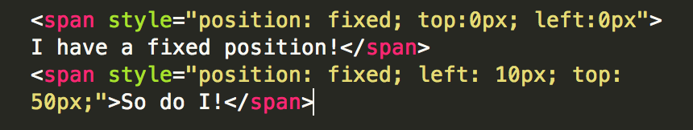
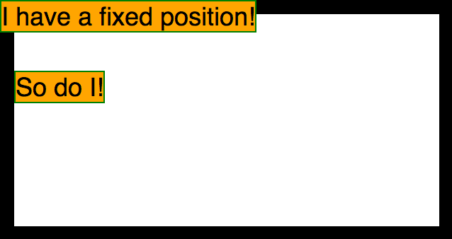
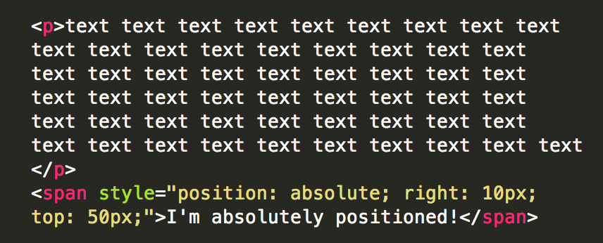
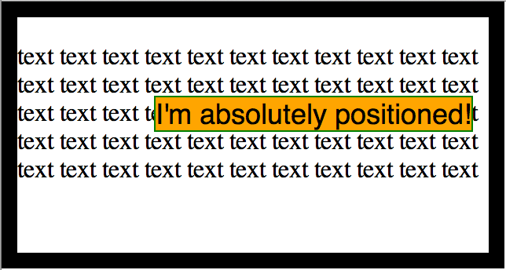

The CSS Position Property
In this post, I'll introduce each of the possible values for the CSS "position" property, and explain what they mean. CSS position can be assigned any of the following values: Static, relative, fixed, or absolute.
Static
"Static" is the default value the the CSS "position" property. So when you do not explicitly apply the "position" property, static positioning is automatically applied. This positioning causes elements to appear on the page in the order they appear in the html document. For inline elements, like span, elements will display inline, starting at the top left of the container with the first html element. Block elements, like div, will be positioned on the next available line. In the following example, two spans and a div are statically positioned. Notice that position is not specified for the second span, but it is automatically positioned statically.


Relative
"Relative" positioning positions the element is relative to its normal position. Take for example the first span in a container: If no position is specified, it will sit squarely at the top left of the container. Using relative positioning, I can cause the span to appear a specified distance left, right, up, or down from its default, or static, position. In the example below, the first element from the "static" example is positioned relatively, 10 pixels from the left, and 50 pixels from the top.


Fixed
A "Fixed" position element is positioned relative to the browser window, or viewport. Even when the page scrolls, a fixed element will stay in place. Position can be specified in relation to the left, right, top, or bottom of the viewport. In the following example, our first span element has a fixed position 0 pixels from both the top and left of the viewport. The second span element has a fixed position: 10 pixels from the left side of the browser window, and 50 pixels from the top of the window. Notice the difference between this example the relative example: In the relative example, there were 10 pixels between the container's inner left border and the span element. In this example, the span sits right up against the container's inner left border. This is because the container border is 10 pixels wide and sits against the left side of the screen, and the span element begins 10 pixels from the left side of the screen.


Absolute
Just as fixed position elements are positioned in relation to the viewport's left, right, top, or bottom boundaries, an element with absolute positioning is positioned in relation to the boundaries of its first explicitly positioned (relative or absolute) ancestor element. In the absence of a positioned ancestor, positioning will be in relation to the html element. In the following example, a span is positioned absolutely within a relatively positioned container: 10 pixels from the right, and 50 pixels from the top. As shown, an absolutely positioned element does not affect the positioning of other elements in the same container. Notice how the text in the p tag flows behind the absolutely positioned span, uninterrupted.

